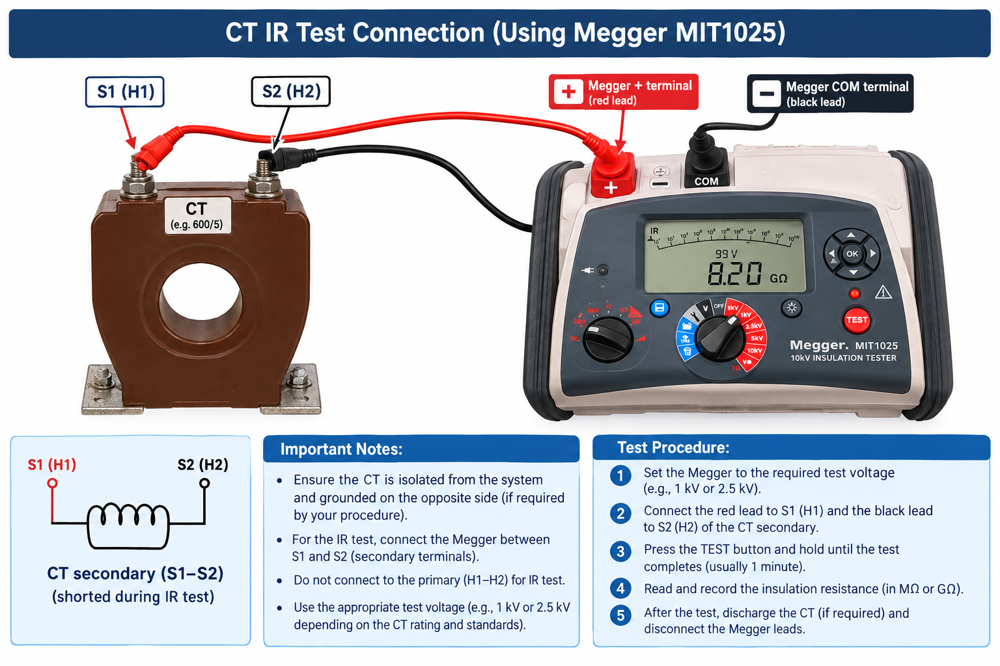
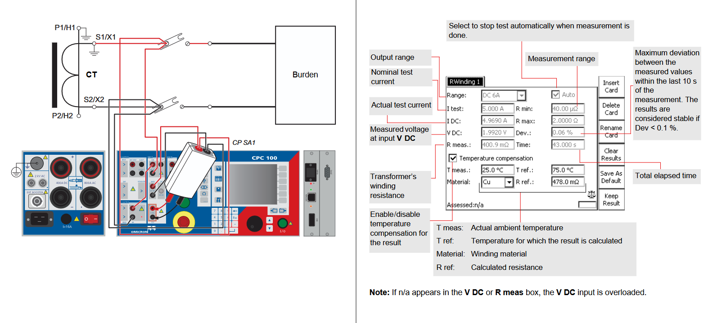
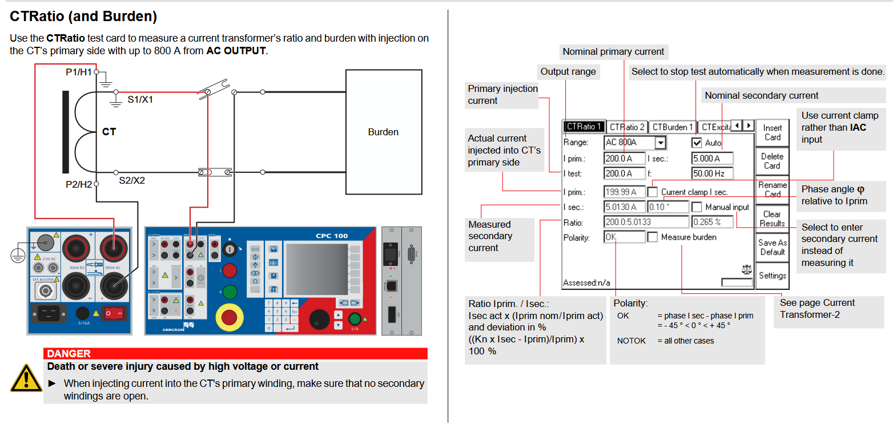
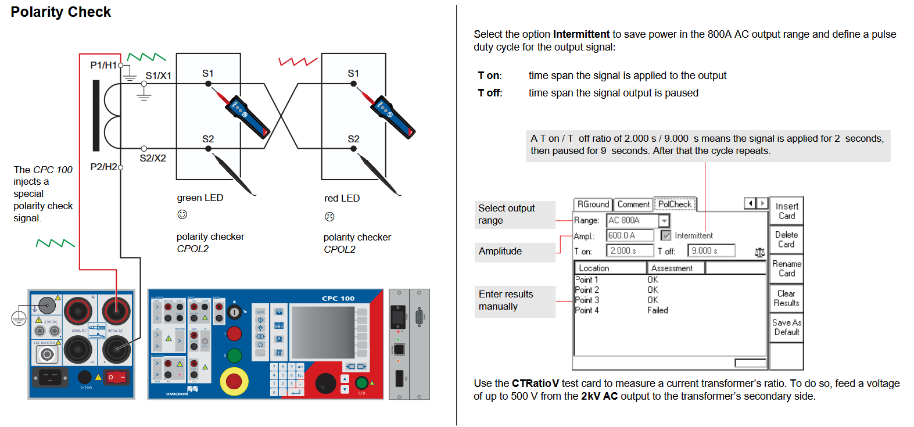
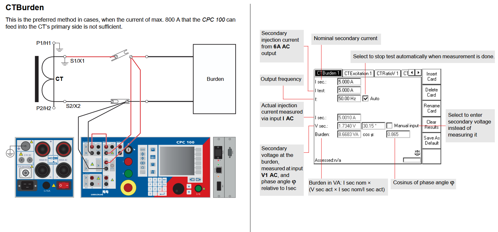
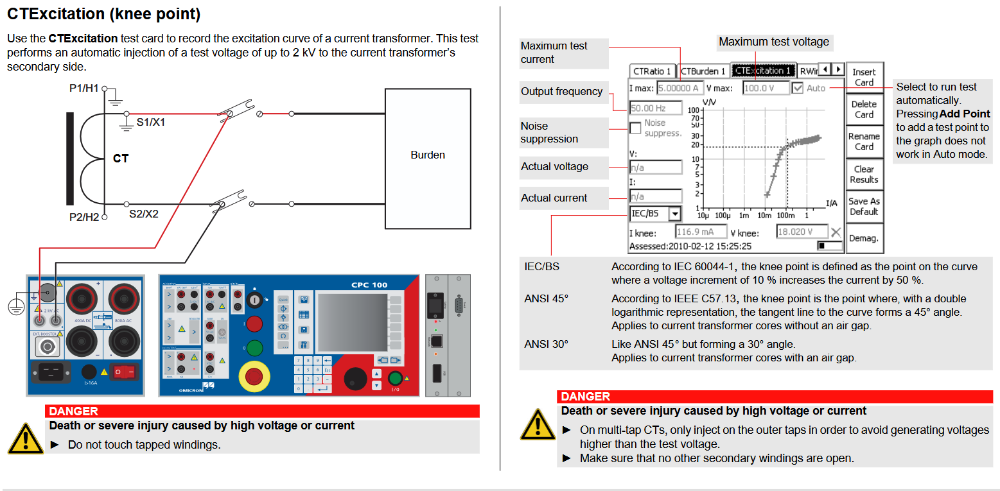

-
What tests must be performed on current transformers (CTs) before putting them into service?
2026-10-22
1. Insolation Resistance Test (IR Test)
Checks the insulation between the primary and secondary windings, and between windings, and between windings and ground, using a high-voltage tester (Megger).
2. Winding Resistance Test
Measure the resistance of a current transformer secondary winding.
3. CT Ratio Test
Injects a known current on the primary and measures the secondary current to verify the transformation ratio and phase displacement.
4. Polarity Test
Verifies the correct orientation of primary (P1/P2) and secondary (S1/S2) terminals.
5. Burden Test
Measures the total impedance (load) on the secondary circuit to ensure it does not exceed the CT rated burden.
6. CT Excitaton and Knee Point Test
Establishes the excitation curve and knee point to verify the CT can handle high fault currents without distorting the signal.
-
What tests must be performed on voltage transformers (VTs) before putting them into service?
Regular maintenance and testing is very important in order to ensure that the protection system... -
Optical Voltage And Current Transformer
Traditional voltage and current transformer imply electromagnetic induction principle to... -
Instrument Transformers
In power systems, currents and voltages are extremely high. Therefore, direct measurement with... -
Circuit Breacker in Power System
Circuit breaker in power system are quite similar to that in our houses circuit box , but... -
Synchronous Condenser
One of the way used to improve the power factor of a power system is by using synchronous...